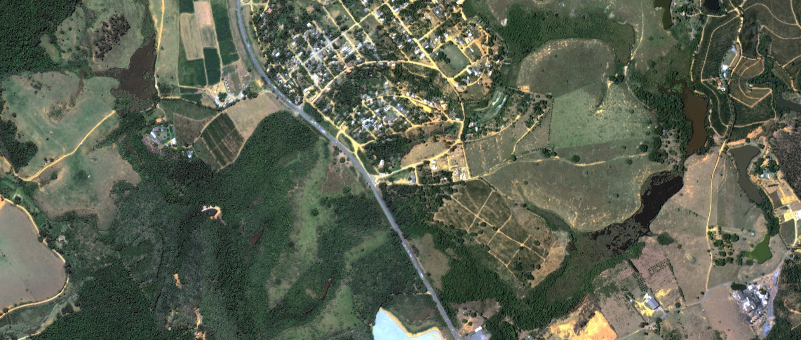
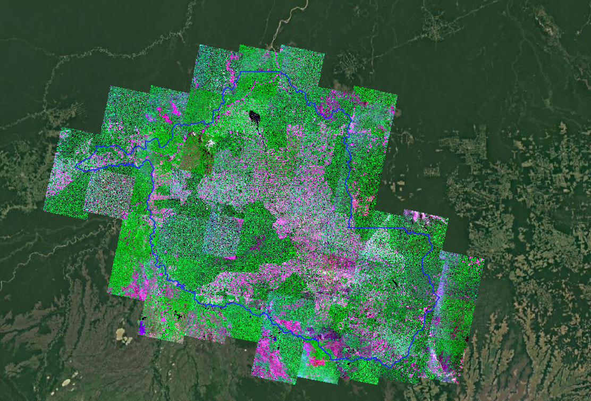

Image Stitching para Análise Ambiental
O IntegraCAR é um projeto lançado pelo Governo do Estado do Espírito Santo com o objetivo de modernizar e agilizar a coleta, análise e validação das informações das propriedades rurais para a regularização ambiental. Utilizamos geoprocessamento, redes neurais e sensoriamento remoto para otimizar o Cadastro Ambiental Rural (CAR) e melhorar o acesso a políticas públicas e crédito.
Um ortofotomosaico é uma grande imagem formada pela união de várias fotos aéreas corrigidas e organizadas para mostrar o terreno exatamente como ele é, sem distorções. É útil para visualizar áreas, entender o uso do solo e apoiar decisões de gestão ambiental.

Image stitching é a técnica de unir diversas imagens com áreas de sobreposição para formar uma única imagem contínua. Essa técnica é essencial para produzir ortofotomosaicos ortorretificados e georreferenciados.
1. Coleta de imagens 2. Análise das imagens 3. Ortoretificação 4. Posicionamento das imagens 5. Mosaico e fusão

Doutor em Ciência da Computação - Ufes
contato@email.com
Mestrando em Computação Aplicada - Ifes
contato@email.com
Graduando Sistemas de Informação - Ifes
contato@email.com
Graduanda Sistemas de Informação - Ifes
contato@email.com
Graduanda Sistemas de Informação - Ifes
contato@email.com
Graduando Sistemas de Informação - Ifes
contato@email.com
Visite nosso repositório no GitHub — código-fonte, pipeline de Image Stitching, exemplos e instruções para reproduzir os ortomosaicos.